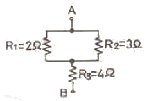
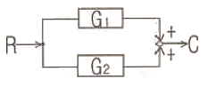
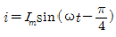
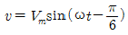
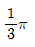
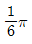
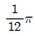
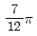
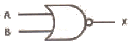
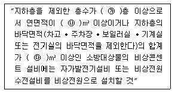

소방설비산업기사(전기) (2009-05-10 기출문제)
1과목: 소방원론
1. 표준상태에서 탄산가스의 증기비중은 약 얼마인가? (단, 탄산가스의 분자량은 44 이다.)
- 1.52
- 2.60
- 3.14
- 4.20
(정답률: 71%)

2. 목탄의 주된 연소형태에 해당하는 것은?
- 자기연소
- 표면연소
- 증발연소
- 확산연소
(정답률: 87%)
3. Halon 104 가 수증기와 작용해서 생기는 유독 가스에 해당하는 것은?
- 포스겐
- 황화수소
- 이산화질소
- 포스핀
(정답률: 78%)
4. 건축물의 주요구조부가 아닌 것은?
- 기둥
- 바닥
- 보
- 옥외계단
(정답률: 93%)
5. 건축물의 내부에 설치하는 피난계단의 구조에서 계단은 내화구조로 하고, 어디까지 직접 연결되도록 하여야 하는가?
- 피난층 또는 옥상
- 피난층 또는 지상
- 개구부 또는 옥상
- 개구부 또는 지하
(정답률: 79%)
6. 프로판 가스의 공기 중 폭발 범위는 약 몇 vol% 인가?
- 2.1 ~ 9.5
- 15 ~ 25.5
- 20.5 ~ 32.1
- 33.1 ~ 63.5
(정답률: 67%)
7. 자연발화를 일으키는 원인이 아닌 것은?
- 산화열
- 분해열
- 흡착열
- 기화열
(정답률: 77%)
8. 화학적 점화원이 아닌 것은?
- 연소열
- 용해열
- 분해열
- 아크열
(정답률: 78%)
9. 물과 접촉하면 발열하면서 수소기체를 발생하는 것은?
- 과산화수소
- 나트륨
- 황린
- 아세톤
(정답률: 68%)
10. 관람석 또는 집회실의 바닥면적 합계가 200m2인 다음 건축물의 주요구조부를 내화구조로 하지 않아도 되는 것은?
- 종교시설
- 주점영업소
- 동ㆍ식물원
- 장례식장
(정답률: 65%)
11. 공기 중의 산소는 용적으로 약 몇 % 정도인가?
- 15
- 21
- 25
- 30
(정답률: 91%)
12. 다음 중 화재하중에 주된 영향을 주는 것은?
- 가연물의 온도
- 가연물의 색상
- 가연물의 양
- 가연물의 융점
(정답률: 75%)
13. 다음 중 연소시 발생하는 가스로 독성이 가장 강한 것은?
- 수소
- 질소
- 이산화탄소
- 일산화탄소
(정답률: 85%)
14. 다음 중 발화의 위험이 가장 낮은 것은?
- 트리에틸알루미늄
- 팽창질석
- 수소화리튬
- 황린
(정답률: 85%)
15. 화재종류 중 A급 화재에 속하지 않는 것은?
- 목재화재
- 섬유화재
- 종이화재
- 금속화재
(정답률: 90%)
16. 다음 중 제4류 위험물이 아닌 것은?
- 가솔린
- 메틸알콜
- 아닐린
- 탄화칼슘
(정답률: 77%)
17. 열전달의 스테판-볼츠만의 법칙은 복사체에서 발산되는 복사열은 복사체의 절대온도의 몇 승에 비례한다는 것인가?
- 1/2
- 2
- 3
- 4
(정답률: 84%)
18. 제1석유류는 어떤 위험물에 속하는가?
- 산화성 액체
- 인화성 액체
- 자기반응성 물질
- 금수성 물질
(정답률: 62%)
19. 질소를 불연성 가스로 취급하는 주된 이유는?
- 어떠한 물질과도 화합하지 아니하므로
- 산소와 화합하나 흡열반응을 하기 때문에
- 산소와 산화반응을 하므로
- 산소와 같이 공기 성분으로 산소와 화합할 수 없기 때문에
(정답률: 78%)
20. 액체 물 1g이 100℃, 1기압에서 수증기로 변할 때 열의 흡수량은 몇 cal 인가?
- 439
- 539
- 639
- 739
(정답률: 68%)
2과목: 소방전기회로
21. 그림에서 A, B 사이의 합성저항은 몇 [Ω] 인가?

- 3.5Ω
- 4.5Ω
- 5.2Ω
- 9Ω
(정답률: 60%)
22. 논리식 A(A+B)를 가장 간단히 하면?
- A
- B
- A+B
- AB
(정답률: 80%)
23. 그림의 블록선도에서 전달함수 C/R는?

- G1/G2
- G1+G2
- G1ㆍG2
- G1-G2
(정답률: 64%)
24. 다음 중 강 자성체에 속하지 않는 것은?
- Cu
- Fe
- Ni
- Co
(정답률: 61%)
25. 100V, 1kW의 전열기를 90V에 사용할 때 소비전력은 몇 [kW] 인가?
- 0.41kW
- 0.51kW
- 0.81kW
- 0.90kW
(정답률: 57%)
26. 맥동률이 가장 적은 정류방식은?
- 단상 반파식
- 단상 전파식
- 3상 반파식
- 3상 전파식
(정답률: 80%)
27. 다음 중 실리콘 다이오드를 쓰는 정류기의 특성을 나타낸 것으로서 옳지 않은 것은?
- 전류 밀도가 크다.
- 온도에 의한 영향이 작다.
- 효율이 높다.
- 소용량 정류기로만 쓸 수 있다.
(정답률: 73%)
28. 직류발전기의 단자전압을 조정하려면 다음 중 어느 것을 조정하는가?
- 전기자저항
- 가동저항
- 방전저항
- 계자저항
(정답률: 57%)
29. 다음 중 직ㆍ교류 겸용 계기가 아닌 것은?
- 정전형
- 유도형
- 전류력계형
- 열전형
(정답률: 29%)
30.

와
와의 위상차는 얼마인가?



(정답률: 69%)
31. 회전운동계의 각속도를 전기적인 요소로 변환하면?
- 정전용량
- 컨덕턴스
- 전류
- 인덕턴스
(정답률: 57%)
32. 실리콘제어정류기(SCR)에 대한 설명 중 맞지 않는 것은?
- pnpn의 4층 구조이다.
- 스위칭 소자이다.
- 직류 및 교류의 전력 제어용으로 사용된다.
- 쌍방향성 사이리스터 이다.
(정답률: 75%)
33. 다음 중 원자 하나에 최외각 전다가 4개인 4가의 전자(four valence electrons)로서 가전자대의 4개의 전자가 안정화를 위해 원자끼리 결합한 구조로 일반적인 반도체 재료로 쓰고 있는 것은?
- Si
- P
- As
- Ga
(정답률: 83%)
34. 가동코일형 계기의 지시값은?
- 평균값
- 실효값
- 파형값
- 파고값
(정답률: 37%)
35. 3μF의 콘덴서를 4kV로 충전하면 저장되는 에너지는 몇 [J] 인가?
- 4J
- 8J
- 16J
- 24J
(정답률: 64%)
36. 평행한 두 도체에 같은 방향의 전류를 흘렸을 두 도체 사이에 작용하는 힘은?
- 반발한다.
- 힘이 작용하지 않는다.
- 흡인한다.
 의 힘이 작용한다.
의 힘이 작용한다.
(정답률: 41%)
37. 교류 정현파회로에서 코일에 축적되는 평균에너지에 관한 설명 중 옳지 않은 것은? (단, 이상적인 코일이라 가정한다.)
- 인덕턴스를 크게 하면 축적에너지는 커진다.
- 코일에 흐르는 실효치 전류를 크게 하면 축적에너지는 커진다.
- 코일에 인가하는 실효치 전압을 크게 하면 축적에너지는 커진다.
- 순시전력을 적분한 후 평균을 취하면 축적에너지를 구할 수 있다.
(정답률: 40%)
38. 자기인덕턴스 L1, L2가 각각 4[mH], 16[mH]인 두 코일이 이상적으로 결합 되었을 경우 상호인덕턴스 M[mH]은?
- 6mH
- 8mH
- 10mH
- 12mH
(정답률: 58%)
39. 그림과 같은 논리회로의 명칭은?

- NOR
- NAND
- NOT
- OR
(정답률: 67%)
40. 1대의 용량 7kVA인 변압기 2대를 가지고 V결선으로 하면 3상 평형부하에 약 몇 [kVA]의 전력을 공급할 수 있는가?
- 5.77kVA
- 8.66kVA
- 10kVA
- 12.12kVA
(정답률: 57%)
3과목: 소방관계법규
41. 다음 중 2급 방화관리대상물의 방화관리자의 선임대상으로 부적합한 것은?
- 소방본부 또는 소방서에서 1년 이상 화재진압 또는 보조업무에 종사한 경력이 있는 자
- 경찰공무원으로 3년 이상 근무한 경력이 있는 자
- 방화관리에 관한 강습교육을 수료한 자
- 의무소방대의 소방대원으로 1년 이상 근무한 경력이 있는 자
(정답률: 36%)
42. 건축허가등의 동의대상물과 관련하여 항공기격납고의 경우 건축허가등의 동의를 받아야 하는 조건으로 알맞은 것은?
- 바닥면적 1000m2 이상인 것
- 바닥면적 3000m2 이상인 것
- 바닥면적 5000m2 이상인 것
- 바닥면적에 관계없이 건축허가 동의 대상이다.
(정답률: 73%)
43. 소방본부장 또는 소방서장은 건축허가 등의 동의요구서류를 접수한 날부터 며칠 이내에 건축허가 등의 동의여부를 회신하여야 하는가? (단, 허가 신청한 건축물 등의 연면적은 30000m2 이상 인 경우이다.)(관련 규정 개정전 문제로 여기서는 기존 정답인 2번을 누르면 정답 처리됩니다. 자세한 내용은 해설을 참고하세요.)
- 7일
- 10일
- 14일
- 30일
(정답률: 71%)
44. 다음 중 소방용수시설인 저수조의 설치기준으로 옳지 않은 것은?
- 지면으로부터의 낙차가 4.5m 이하일 것
- 흡수부분의 수심이 0.5m 이상일 것
- 흡수관의 투입구가 사각형의 경우에는 한 변의 길이가 60cm 이상일 것
- 저수조에 물을 공급하는 방법은 상수도에 연결하여 수동으로 급수도는 구조일 것
(정답률: 79%)
45. 다음 중 화재원인조사의 종류에 속하지 않는 것은?
- 연소상황 조사
- 인명피해 조사
- 피난상황 조사
- 소방시설 등 조사
(정답률: 38%)
46. 소방시설관리업자의 지위를 승계한 자는 승계한 날로부터 몇ㄹ 이내에 시ㆍ도지사에게 신고하여야 하는가?
- 14일 이내
- 20일 이내
- 28일 이내
- 30일 이내
(정답률: 53%)
47. 소방용수시설 중 저수조 설치시 지면으로부터 낙차의 범위로 알맞은 것은?
- 2.5m 이하
- 3.5m 이하
- 4.5m 이하
- 5.5m 이하
(정답률: 83%)
48. 소방시설업의 등록을 하지 아니하고 영업한 자의 벌칙은?(관련 규정 개정전 문제로 여기서는 기존 정답인 2번을 누르면 정답 처리됩니다. 자세한 내용은 해설을 참고하세요.)
- 1년 이하의 징역 또는 1000만원 이하의 벌금
- 3년 이하의 징역 또는 1500만원 이하의 벌금
- 3년 이하의 징역 또는 3000만원 이하의 벌금
- 5년 이하의 징역 또는 3000만원 이하의 벌금
(정답률: 66%)
49. 의용소방대의 설치 등에 대한 사항으로 옳지 않는 것은?
- 의용소방대원은 비상근으로 한다.
- 소방업무를 보조하기 위하여 특별시ㆍ광역시ㆍ시ㆍ읍ㆍ면에 의용소방대를 둔다.
- 의용소방대의 운영과 처우 등에 대한 경비는 그 대원의 임면권자가 부담한다.
- 의용소방대의 설치ㆍ명칭ㆍ구역ㆍ조직 훈련 등 운영 등에 관하여 필요한 사항은 소방방재청장이 정한다.
(정답률: 44%)
50. 다량의 위험물을 저장ㆍ취급하는 제조소등으로서 대통령령이 정하는 제조소등이 있는 동일한 사업소에서 대통령령이 정하는 수량 이상의 위험물을 저장 또는 취급하는 경우 당해 사업소의 관계인은 대통령령이 정하는 바에 따라 당해 사업소에 자체소방대를 설치하여야 한다. 여기서 “대통령령이 정하는 수량” 이라 함은 지정수량의 몇 배를 말하는가?
- 2천배
- 3천배
- 4천배
- 5천배
(정답률: 73%)
51. 제1종 판매취급소는 저장 또는 취급하는 위험물의 수량이 지정수량의 얼마인 판매취급소를 말하는가?
- 20배 이하
- 20배 이상
- 40배 이하
- 40배 이상
(정답률: 49%)
52. 소방기본법령상 구급대의 편성과 운영을 할 수 있는 자와 거리가 먼 것은?
- 소방방재청장
- 소방본부장
- 소방서장
- 시장ㆍ군수
(정답률: 80%)
53. 하자보수대상 소방시설 중 하자보수보증기간이 3년인 것은?
- 유도등
- 비상방송설비
- 간이스프링클러설비
- 무선통신보조설비
(정답률: 77%)
54. 방염업자의 지위승계에 관한 사항으로 옳지 않은 것은?
- 합병 후 존속하는 법인이나 합병에 의하여 설립되는 법인은 그 방염업자으 지위를 승계한다.
- 방염업자의 지위를 승계한 자는 행정안전부령이 정하는 바에 따라 시ㆍ도지사에게 신고하여야 한다.
- 지방세법에 따른 압류재산의 매각과 그 밖에 이에 준하는 절차에 따라 시설의 전부를 인수한 자는 그 방염업자의 지위를 승계한다.
- 시ㆍ도지사는 지위승계 신고를 받은 때에는 30일 이내에 방염처리업등록증 및 등록수첩을 새로 교부하고, 제출된 기술인력의 기술자격증에 그 변경사항을 기재하여 교부한다.
(정답률: 40%)
55. 저장소 또는 제조소 등이 아닌 장소에서 지정수량 이상의 위험물을 저장 또는 취급한 자에 대한 벌칙은?
- 1년 이하 징역 또는 1천만원 이하의 벌금
- 2년 이하 징역 또는 1천만원 이하의 벌금
- 1년 이하 징역 또는 2천만원 이하의 벌금
- 2년 이하 징역 또는 2천만원 이하의 벌금
(정답률: 74%)
56. 특정소방대상물을 위락시설에 해당 되지 않는 것은?(오류 신고가 접수된 문제입니다. 반드시 정답과 해설을 확인하시기 바랍니다.)
- 투전기업소
- 카지노업소
- 무도장
- 공연장
(정답률: 44%)
57. 방염대상물품 중 제조 또는 가공공정에서 방염처리를 하여야 하는 물품이 아닌 것은?
- 암막
- 두께가 2mm 미만인 종이벽지
- 바닥에 설치하는 카페트
- 창문에 설치하는 브라인드
(정답률: 81%)
58. 제4류 위험물 제조소의 경우 사용전압이 22kV 인 특고압 가공저선이 지나갈 때 제조소의 외벽과 가공전선 사이의 수평거리(안전거리)는 몇 [m]이상 이어야 하는가?
- 3m
- 5m
- 10m
- 20m
(정답률: 27%)
59. 방하관리대상물의 관계인이 방화관리자를 선임한 경우에는 행정안전부령이 정하는 바에 따라 선임한 날부터 며칠 이내에 소방본부장 또는 소방서장에게 신고하여야 하는가?
- 7일
- 14일
- 21일
- 30일
(정답률: 68%)
60. 다음 중 소방용기계ㆍ기구에 해당하지 않는 것은?
- 방염제
- 구조대
- 화학반응식거품소화기
- 공기호흡기
(정답률: 34%)
4과목: 소방전기시설의 구조 및 원리
61. 소방시설용비상전원수전설비에서 저압으로 전기사업자로 부터 수정하는 비상전원설비에 포함되지 않는 것은?
- 전용배전반(1ㆍ2종)
- 공용배전반(1ㆍ2종)
- 전용분전반(1ㆍ2종)
- 공용분전반(1ㆍ2종)
(정답률: 34%)
62. 다음 중 감지기를 설치하여야 하는 장소는?
- 실내의 용적이 30m3 이상인 장소
- 부식성 가스가 체류하고 있는 장소
- 파이프덕트 등 그 박의 이와 비슷한 것으로서 2개층 마다 방화구획된 것
- 욕조나 샤워시설이 있는 화장실
(정답률: 52%)
63. 공기관식 차동식분포형감지기의 설치 기준에 대한 설명으로 옳지 않은 것은?
- 공기관은 도중에서 분기하지 아니하도록 할 것
- 공기관의 노출부분은 감지구역마다 20m 이상이 되도록 할 것
- 하나의 검출부분에 접속하는 공기관의 길이는 100m 이상으로 할 것
- 공기관과 감지구역의 각 변과의 수평거리는 1.5m 이하가 되도록 할 것
(정답률: 41%)
64. 다음 중 이온화식 감지기의 내부이온실 및 외부이온실에 사용되고 있는 방사성 동위원소는?
- 마그네슘
- 아메리슘
- 나트륨
- 니크롬
(정답률: 57%)
65. 자동식사이렌설비는 그 설비에 대한 감시상태를 몇 분간 지속한 후 유효하게 10분 이상 경보할 수 있는 축전지 설비를 설치하여야 하는가?
- 20분
- 30분
- 60분
- 120분
(정답률: 83%)
66. 누전경보기의 전원은 분전반으로부터 전용회로로 하고 각 극에 개폐기 및 몇 [A] 이하의 과전류차단기를 설치하여야 하는가?
- 15A
- 20A
- 25A
- 30A
(정답률: 78%)
67. 비상방송설비에서 실외에 설치하는 확성기의 음성입력은 몇 [W] 이상이어야 하는가?
- 0.3W
- 1.0W
- 3.0W
- 30W
(정답률: 78%)
68. 바닥면적이 340m2인 장소에 차동식스포트형 감지기(2종)를 설치하고자 한다. 최소 설치 개수는? (단, 감지기 설치 높이는 3.8m 이며 주요구조부가 내화 구조로 된 소방대상물 이다.)
- 4
- 5
- 6
- 7
(정답률: 45%)
69. 다음 중 무선통신보조설비의 무선기가 접속단자 설치기준으로 적합하지 아니한 것은?
- 접속단자는 지상에서 유효하게 소방활동을 할 수 있는 장소 또는 수위실 등에 설치할 것
- 접속단자의 설치높이는 바닥으로부터 0.8m 이상 1.5m 이하의 위치에 설치할 것
- 지상의 접속단자는 보행거리 300m 이내마다 설치할 것
- 접속단자의 보호함 표면에는 “소방용 접속단자”라고 표시한 표지를 할 것
(정답률: 57%)
70. 보상식스포트형감지기는 정온점이 감지기 주위의 평상시 최고온도보다 몇[℃] 높은 것으로 설치하여야 하는가?
- 10℃
- 15℃
- 20℃
- 25℃
(정답률: 80%)
71. 다음 중 방폭ㆍ방식ㆍ방습ㆍ방온ㆍ방진 및 정전기 차폐등의 방호조치를 하지 않은 누전경보기의 수신기를 설치할 수 있는 장소는?
- 습도가 높은 장소
- 온도의 변화가 완만한 장소
- 화약류를 제조하거나 저장 또는 취급하는 장소
- 가연성의 증기ㆍ먼지ㆍ가스 등이나 부식성의 증기ㆍ가스 등이 다량으로 체류하는 장소
(정답률: 78%)
72. 비상콘센트설비에 있어 하나의 전용회로에 설치하는 비산콘센트는 몇 개 이하로 하여야 하는가?
- 5개
- 10개
- 50개
- 100개
(정답률: 78%)
73. 광전식분리형감지기 설치기준에 대한 설명 중 맞는 것은?
- 광축은 나란한 벽으로부터 0.5m 이상 이격하여 설치
- 감지기의 송광부와 수광부는 설치된 뒷벽으로부터 1.5m 이내 위치에 설치
- 광축의 높이는 천장 등 높이의 90% 이상일 것
- 감지기의 공축의 길이는 공칭감시거리 범위이내 일 것
(정답률: 47%)
74. 다음 중 무선통신보조설비의 증촉기 설치 기준으로 옳지 않은 것은?
- 전원은 전기가 정상적으로 공급되는 축정지 도는 교류 전압 옥내간선으로 하여야 한다.
- 전원까지의 배선은 전용으로 하여야 한다.
- 증폭기의 비상전원 용량은 무선통신보조설비를 유효하게 20분 이상 작동시킬 수 있는 것으로 하여야 한다.
- 증폭기의 전면에는 주 회로의 전원이 정상이지의 여부를 표시할 수 있는 표시등 및 전압계를 설치하여야 한다.
(정답률: 75%)
75. 다음 중 휴대용비상조명등의 기준 등에 대한 설명으로 옳지 않은 것은?
- 지하상가 및 지하역사에는 보행거리 25m 이내 마다 3개 이상 설치할 것
- 설치높이는 바닥으로부터 0.8m 이상 1.5m 이하의 높이에 설치할 것
- 건전지 및 충전식 배터리의 용량은 60분 이상 유효하게 사용할 수 있을 것
- 사용시 자동으로 점등되고 외함은 난연성능이 있을 것
(정답률: 67%)
76. 비상벨설비 또는 자동식 사이렌설비의 음향장치는 정격전압의 몇 [%] 전압에서 음향을 발할 수 있도록 하여야 하는가?
- 20%
- 40%
- 60%
- 80%
(정답률: 80%)
77. 다음 ( ㉮ ), ( ㉯ ), ( ㉰ )에 들어갈 내용으로 알맞은 것은?

- ㉮ 5, ㉯ 1000, ㉰ 2000
- ㉮ 5, ㉯ 2000, ㉰ 3000
- ㉮ 7, ㉯ 1000, ㉰ 2000
- ㉮ 7, ㉯ 2000, ㉰ 3000
(정답률: 67%)
78. 다음 중 전선의 약호와 설명을 나타낸 것으로 옳지 않은 것은?
- HIV : 600V 2종 비닐절연전선
- IV : 600V 비닐절연전선
- OW : 옥외용 비닐절연전선
- DV : 배기닥트용 비닐절연전선
(정답률: 41%)
79. 피난기구의 축광식표지에 관한 설명 중 옳지 않은 것은?
- 방사성물질을 사용하는 위치표지는 사용하지 아니하여야 한다.
- 위치표지는 주위 조도 0lx에서 60분간 발광 후 직선 거리 10m 떨어진 위치에서 보통시력으로 표시면의 문자 등을 쉽게 식별할 수 있는 것으로 할 것
- 피난기구를 설치한 장소에는 가까운 곳의 보기 쉬운 곳에 피난기구의 위치를 표시하는 발광식 또는 축광식 표지와 그 사용방법을 표시한 표지를 부착할 것
- 위치표지의 표지면의 휘도는 주위 조도 0lx에서 60분 간 발광후 7mcd/m2으로 할 것
(정답률: 50%)
80. 다음 중 비상방송설비의 설치에 대한 설명으로 옳지 않은 것은?
- 엘리베이터 내부에는 별도의 음향장치를 설치하였다.
- 음량조정기를 설치하므로 음량조정기의 배선은 2선식으로 하였다.
- 비상방송용 확성기를 각 층마다 설치하였다.
- 실내에 설치된 비상방송 확성기의 음성입력을 확인해보니 2W 이었다.
(정답률: 66%)
44 g의 탄산가스가 차지하는 부피 = 22.4 L
1 g의 탄산가스가 차지하는 부피 = 22.4 L ÷ 44 g = 0.509 L/g
즉, 1 g의 탄산가스는 0.509 L의 부피를 차지한다. 이때, 공기의 증기비중은 1이므로, 탄산가스의 증기비중은 다음과 같이 계산할 수 있다.
탄산가스의 증기비중 = (1 g의 탄산가스가 차지하는 부피) ÷ (1 g의 공기가 차지하는 부피) = 0.509 ÷ 1 = 1.52
따라서, 탄산가스의 증기비중은 1.52이다.